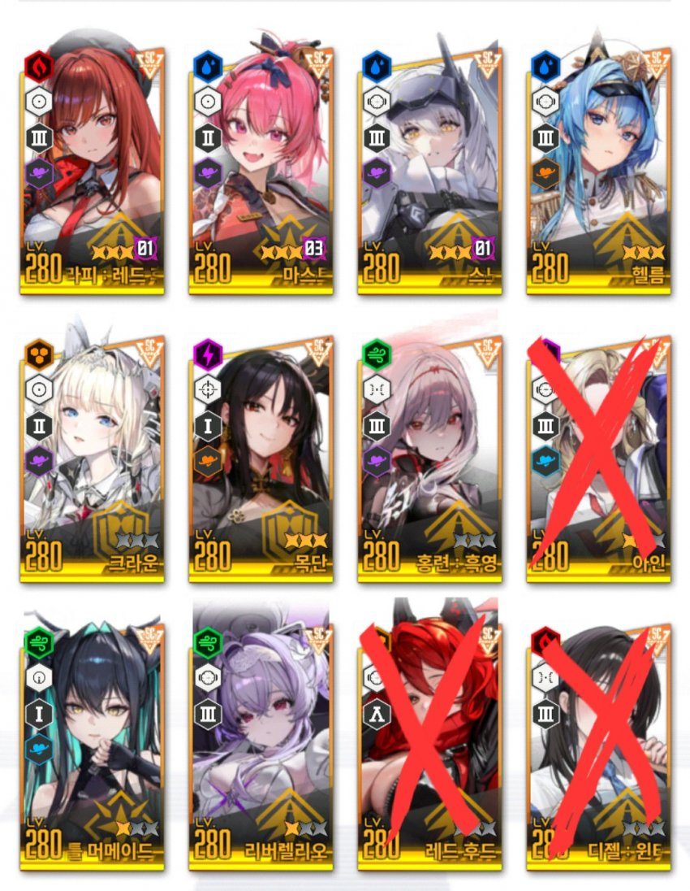

아니스 등장으로 이공략은 반쯤 폐기합니다
목단, 헬름 육성중요도가 어느정돈지 나도 감을 못잡겠음
일단 아니스 존나셈
안녕 미래의 3.5주년 유입 니빙이들
니케를 시작한걸 축하함
나도 5개월밖에 니케를 안했지만
그간의 경험으로 캐릭터 육성하는 흐름을 간단하게
알려주고 싶어서 글을씀
일단 니케는 한 캐릭터 육성기간을 20일~30일 정도로 보면됨
초반엔 재화를 밀어줘서 4~5캐릭까진 빠르게 키울수 있지만
그 이후엔 한캐릭터를 쓸만하게 육성하는 기간이 상당히 긺
초반에 재화많다고 엄하게 쓰면 후폭풍이 크게옴
초반부~ 노말스테이지 40
크라켄 7단을 목표로 간단하게 알려줄게
여기 이후는 성향에 따라 솔레 / 스레나 / 스테이지 집중
식으로 육성방향이 나뉘기 때문이야
일단 작성일 기준으로 가장 우선 키워야 할 니케들

정답은 아니지만 내가 추천하는 육성순서는
라피 레드후드 >= 스노우 화이트 헤비암즈 >= 크라운
> 리틀 머메이드(세이렌) > 메이드 마스트
> 목단(애장품) >= 헬름 >= 리버렐리오 >= 흑련
이 순서야
리버렐리오 흑련을 제외한 7캐릭만 있으면
40지까지 문제가 없어
세부적인 디테일은 할배들한테 물어봐
저렇게 적은 이유가 있긴한데 너무 길어짐
캐릭을 다 갖춰서 추천해준대로 키우는게 베스트지만
거의 그럴순 없으니깐 없는캐릭 대체는 할배들한테 물어봐
1. 초반 시작부 ~ 노말 22지(특특요 해금) / 레벨 160~200
라피, 크라운, 스화, 세이렌을 중점적으로 육성해줘
딜러인 라피, 스화부터 육성해주는게 좋고
4명을 집중해서 육성하는 이유는 대여니케를 빌려서
한자리를 채울수 있기 때문이야
세이렌이 없거나 육성재화가 모자라면
크라운, 라피, 스화같이 3명을 집중육성하는 것도 좋아
2. 22지 ~ 34지(전격스테 진입부) / 레벨 200~241
이 구간에선 위 4명을 할수있는 한 육성을 다하는게 좋아
세이렌, 크라운, 라피, 스화 스킬작 최대한 해주고
소장품도 최대한 강화해주고
오버작은 전격딜러를 키워줄거면 조금만 해주고
웬만하면 손 안대는걸 추천해
그리고 5번째 육성은 메이드 마스트를 해줘
목단, 헬름도 좋지만 다 있다는 가정하에
나는 메이드 마스트를 추천함
전격약점인 스테이지와 보스가 27지부터 시작되는데
전격딜러를 키워야 되나요?<<< 이거 진짜 많이 물어봄
사람마다 다르겠지만 내 생각은
글 작성하는 시점 기준으로
신데렐라가 있으면 키워주면 좋아
신데렐라가 없을때
- 목단 애장품 만들 각이 보인다 = 목단만 키워서 넘겨
- 목단 도저히 각이 안보이는데 아인은 있다 = 갤에 물어봐
3.5주년 캐릭이 전격으로 나올진 모르지만
그건 그때가서 할배들한테 물어보자고
나는 아인키웠는데 개인적으로 아인 육성을
저 타이밍에 하는건 되게 비추천함
전격딜러를 키워주면 스테이지 캠핑을 빨리끝내고
코더에서 이득을 볼 수 있고
전격딜러를 스킵하면 코더에서 좀 손해를 보지만
그 재화로 흑련 리버한테 투자해서 모듈을 이득볼수 있음
3. 34지 ~ 40지(크라켄 7단) / 레벨241~281
사실 2번 구간에서 캐릭터 5~6명 육성을 하고
이구간에선 7~10번째 캐릭터까지 육성을 할거야
라피 크라운 세이렌 스화 메스트 육성이 끝나면
목단 / 헬름 중 선택해서 키워주면돼
40지 보스를 깨려면 둘다 있어야 하지만
34지, 36지 보스 잡을땐 둘중 하나만 있어도 돼
큰 이유는 없지만 소장품 안겹치는 목단을 먼저 키우는걸 추천해
그리고 241~261구간엔 크라켄 7단을 칠수있으니
슬슬 준비해주는게 좋음
엄청 빠르게 칠 필요는 없지만
보통 크라켄 7단 칠때 하베스터는 6단
나머지는 똥꼬쑈 해서 5단 언저리일거임
빠르게 크라켄 7단 넣어놓고 강해져서 다시 장비캐러오자
이 구간엔 오버작을 시작해서 라피와 스화를 건드릴건데
해주고 싶은 말은
흑련, 리버 육성할때 모듈 최소 40~60개는 남겨놔!
싱크레벨 251에 세이렌 크라운 흑련 리버렐리오 메스트
이 조합에 흑련, 리버렐리오 우공이 80정도 넘으면
크라켄 7단을 수월하게 칠수있기 때문이야
여기까지 오는데 빠르면 3~4달 늦어도 6~7달 안에는 될거야
이 이후부턴 네 취향에 맞춰 너만의 니케를 하렴
이 글이 정답은 아니고 캐릭 보유랑 과금력에 따라
상당히 달라지는 부분이니깐
대충 큰 틀은 이렇구나 참고만 하고
모르는거 있으면 질문탭달고 할배들한테 물어봐
니갤할배들 대답 존나잘해줌ㅇㅇ